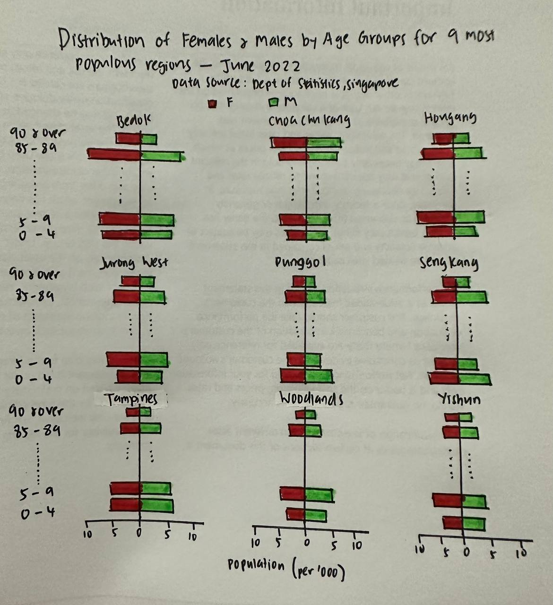
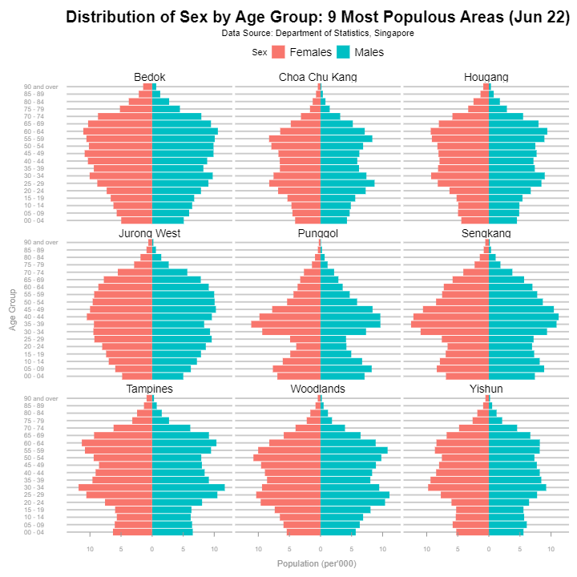

pacman::p_load(tidyverse, dplyr, ggplot2, ggthemes, ggiraph) Take-home Exercise 2
Peer critique and visualization remake of take-home exercise 1
1. Peer Critique
Take-home Exercise 2 is done by selecting a Take-home Exercise 1 submission prepared by a fellow classmate. The peer submission will be critiqued in terms of clarity and aesthetics. I will also remake the original design by proposing an alternative design using the data visualization principles and best practices learnt in Lesson 1 and 2

Clarity
Grouping the age groups into buckets within a +/- 15 to 20 year range (e.g., young dependents, young work group, prime work group, etc.) results in loss of important details on the distribution shape. This also goes against the essence of the age sex pyramid, which is intended to graphically represent the distribution of a population by age and sex.
The age-sex pyramid is also intended to be depicted in the form of a pyramid, where the age group should be sorted in descending order (i.e., oldest age group on top). Inverting the age group order may not be intuitive for users if they see the apex starting from the bottom.
Transforming the values into percentages without displaying the absolute population numbers makes the chart confusing and misleading as users are not able to compare the population differences between the planning areas. In the selected chart, population sizes across all planning look visually similar, which is not really the case in numerical terms.
The title is labelled as “Proportion of Females and Males by Age Groups for 9 most populous Planning Areas in the Central Area - June 2022”. This may be misleading for users as the definition, scope and methodology of how the 9 Central Areas were selected, or what is defined as a “Central Area” lacks clarity.
Aesthetics
The colours chosen for the chart was mildly confusing as it does not show the separation between Males and Females.
The percentage labels that were included at the end of the bars make the chart appear quite cluttered; additional supplementary details should be included in the tooltip instead, as the main focus of the display should be in the distribution.
Good display of data source credits.
Fonts selected were easy to read, with clear labeling of Planning Areas
2. Visualization Remake
2.1. Proposed Design
This proposed design of the visualization remake is intended to retain ideas from the original visualization, whilst incorporating best practices to showcase interesting insights from the population areas.
Dynamic filter has been added to filter for the top 9 most populous planning areas instead.
Age Group has been cleaned and original grouping has been retained to preserve the population distribution granularity as much as possible.
Labels have been removed to avoid unnecessary clutter.
Preserved and enhanced clear labeling of the Planning Area plot labels.
Added Colour coding and legends to clearly indicate the distribution segregation between females and males.
The population scale axis (x-axis) has been rounded to per thousands instead. The actual population number has also been set up to display as a tooltip on hover instead. This would reduce the numeric clutter in the chart, whilst preserving important information for the user.
The data source credit has been retained.

2.2. Remake of Original Visualization using R
Installing and launching R packages
Importing the data
respop_data <- read_csv("data/respopagesextod2022.csv")Preparing the data
Cleaning of Age Group Values
Refer to annotations made within the code for specific description
respop_data <- respop_data %>%
mutate(AG = case_when(
AG %in% "90_and_over" ~ "90 and over",
AG %in% "85_to_89" ~ "85 - 89",
AG %in% "80_to_84" ~ "80 - 84",
AG %in% "75_to_79" ~ "75 - 79",
AG %in% "70_to_74" ~ "70 - 74",
AG %in% "65_to_69" ~ "65 - 69",
AG %in% "60_to_64" ~ "60 - 64",
AG %in% "55_to_59" ~ "55 - 59",
AG %in% "50_to_54" ~ "50 - 54",
AG %in% "45_to_49" ~ "45 - 49",
AG %in% "40_to_44" ~ "40 - 44",
AG %in% "35_to_39" ~ "35 - 39",
AG %in% "30_to_34" ~ "30 - 34",
AG %in% "25_to_29" ~ "25 - 29",
AG %in% "20_to_24" ~ "20 - 24",
AG %in% "15_to_19" ~ "15 - 19",
AG %in% "10_to_14" ~ "10 - 14",
#<< Labelling single digits to start with '0' preserves the sorting integrity without requiring a separate code to specifically sort the age groups
AG %in% "5_to_9" ~ "05 - 09",
AG %in% "0_to_4" ~ "00 - 04"))Deriving Top 9 Planning Areas by Population
Refer to annotations made within the code for specific description
#<< Derive Top 9 highest Pop by PA
top9pa <- respop_data %>%
select(PA, Pop) %>% #<< Select PA and Pop columns
group_by(PA) %>% #<< Group by PA, sum Pop into sum_Pop column
summarise(sum_Pop=sum(Pop),
.groups = 'drop') %>%
arrange(desc(sum_Pop)) %>% #<< Sort PA by sum_Pop in descending order
slice(0:9) #<< Only retain top 9 PA
#<< Inner join back to main dataset to get full data only for the Top 9 PA
respop_filtered <- inner_join(respop_data,
top9pa,
by = c("PA" = "PA"))
#<< Aggregate Top 9 Population by PA, AG, Sex
dd <- respop_filtered %>%
select(PA, AG, Sex, Pop) %>%
group_by(PA, AG, Sex) %>%
summarise(sum_Pop=sum(Pop),
.groups = 'drop')Creating Age-Sex Pyramid
Refer to annotations made within the code for specific description
p <- ggplot(data = dd, aes(x = AG, fill = Sex)) +
#<< First Bar Interactive Chart to filter for data where Sex = Males, display y-axis by population in thousands, display Population # in tooltip
geom_col_interactive(data = subset(dd, Sex == "Males"), aes(y = sum_Pop/1000, tooltip = sum_Pop)) +
#<< Second Bar Chart to filter for data where Sex = Females, display y-axis by population in thousands. *-1 inverts the axis, display Population # in tooltip
geom_col_interactive(data = subset(dd, Sex == "Females"), aes(y=sum_Pop/1000 * (-1), tooltip = sum_Pop) ) +
#<< Flip the coordinates so that AG is at the Y-axis
coord_flip() +
#<< Split chart by PA, with 3 rows - there are 9 PAs, so this will appear as a 3x3
facet_wrap(~ PA, , nrow=3) +
#<< Convert initial y-axis labels (i.e., Pop) into absolute terms to remove the '-' sign
scale_y_continuous(labels = abs) +
#<< Apply economist theme - white background for simplicity, horizontal gridlines only for easy trace-ability to AG axis marks
theme_economist_white(gray_bg=FALSE) + scale_color_economist() +
#<< Formatting of axis fonts, axis ticks, axis lines
#<< Further expanding line margins to reduce clutter of title / subtitle positioning
theme(axis.text = element_text(colour = "gray60", size = 8),
axis.ticks.x = element_line(colour = "gray60"),
axis.line.x = element_blank(),
plot.title = element_text(size = 20, face = "bold",hjust = 0.5),
axis.title.x = element_text(margin = margin(t = 10), colour = "gray60"),
axis.title.y = element_text(margin = margin(r = 10), colour = "gray60"),
plot.subtitle = element_text(margin=margin(5,0,5,0))
) +
#<< add Header title, Axis titles, sub titles
ggtitle("Distribution of Sex by Age Group for 9 most populous areas - June 2022") +
labs(y = "Population (per'000) ", x = "Age Group", size = 15) +
labs(subtitle = "Data Source: Department of Statistics, Singapore")
#<< run interactive ggirafe
girafe(
ggobj = p,
width_svg = 10,
height_svg = 10
)